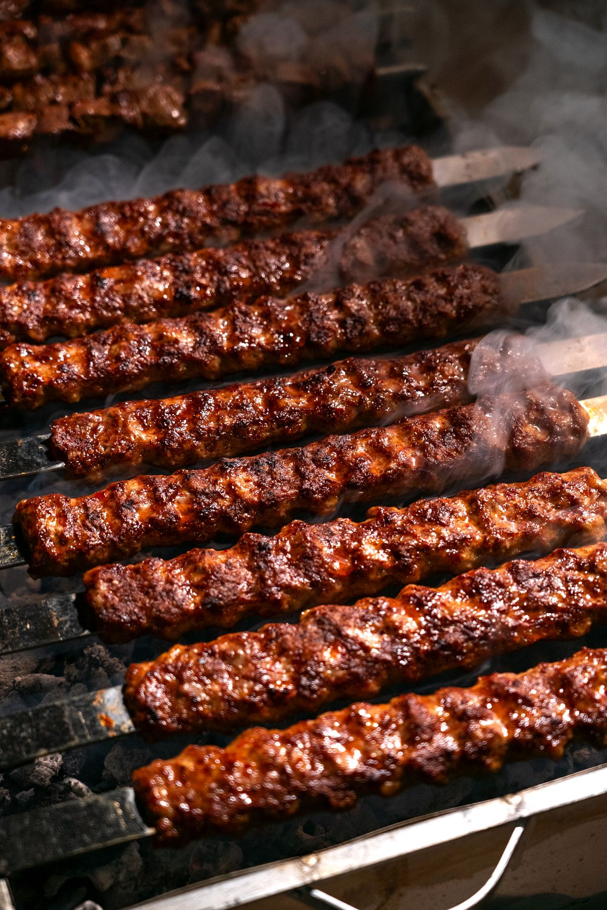
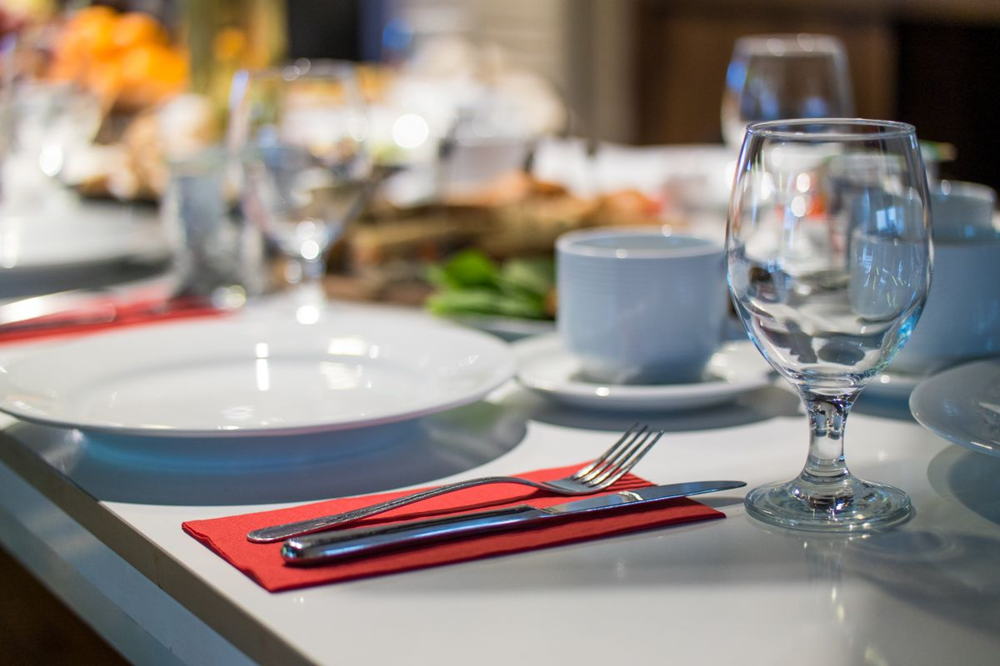

سینی کباب مخصوص
سینی مخصوص شبزدگان برای جمعهای خانوادگی؛ ترکیبی از کبابهای منتخب رستوران در یک سینی کامل.
کبابسرای شبزدگان با سینی کباب مخصوص، پرده کباب و چنجههای زغالی، یکی از نشانیهای ثابت کبابدوستان سعادتآباد است. میزتان را همین حالا آنلاین رزرو کنید.

در شبزدگان، قلب منو کباب است؛ کبابهایی که روی زغال آماده میشوند و با دورچین کامل سر میز میآیند.

سینی مخصوص شبزدگان برای جمعهای خانوادگی؛ ترکیبی از کبابهای منتخب رستوران در یک سینی کامل.

پرده کباب، از کبابهای ویژه شبزدگان که طرفداران خودش را در سعادتآباد دارد.

چنجه و کبابهای زغالی با گوشت تازه؛ همان طعمی که از یک کبابسرای اصیل انتظار دارید.

سبزیپلوی معطر با ماهی، برای کسانی که کنار کباب، طعم غذای دریایی سنتی را هم میخواهند.

شبزدگان در سرو شرقی سعادتآباد، با بیش از ۹۰ پست و هزاران مهمان، نشانی ثابت ناهار و شام خانوادگی در غرب تهران است.
کبابها در شبزدگان روی زغال آماده میشوند؛ طعم دودی واقعی، نه گریل برقی.
سینی کباب مخصوص، انتخاب جمعهای خانوادگی و مهمانیهای چندنفره است.
صفحه اینستاگرام ما @shabzadegan_saadat_abad با بیش از ۳۲ هزار دنبالکننده، منو و فضای رستوران را بهروز منتشر میکند.
سرو شرقی، نبش کوچه چهارم؛ نشانیای که برای اهالی سعادتآباد و شهرک غرب نزدیک و آشناست.
کباب تازه، سفره کامل و جمعی که دور یک میز جمع شدهاند.



در فرم رزرو، روز و ساعت، تعداد نفرات و فضای موردنظرتان را مشخص کنید.
برای تأیید روز و ساعت رزرو، با شمارهای که ثبت کردهاید تماس میگیریم.
به سرو شرقی سعادتآباد بیایید؛ میزتان آماده است.
تهران، سعادتآباد، سرو شرقی، بعد از علامه شمالی، نبش کوچه چهارم، پلاک ۴۵.
هر روز از ۱۱ صبح تا ۲۳:۳۰.
سینی کباب مخصوص، پرده کباب، چنجه و کبابهای زغالی؛ در کنارشان سبزیپلو با ماهی هم سرو میشود.
بله؛ سینی کباب مخصوص شبزدگان برای جمعهای خانوادگی و دورهمی طراحی شده است؛ میزتان را از فرم همین صفحه رزرو کنید.
فرم رزرو همین صفحه را پر کنید یا با شماره ۰۲۱۲۲۳۸۰۵۸۹ تماس بگیرید.
فرم را پر کنید؛ برای تأیید روز و ساعت رزرو با شما تماس میگیریم. اگر ترجیح میدهید مستقیم صحبت کنیم، تماس بگیرید:
۰۲۱ - ۲۲۳۸۰۵۸۹ اینستاگرام: @shabzadegan_saadat_abad